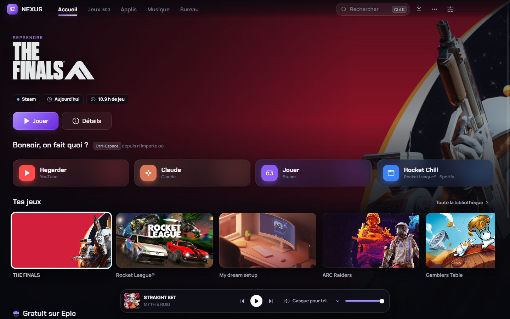
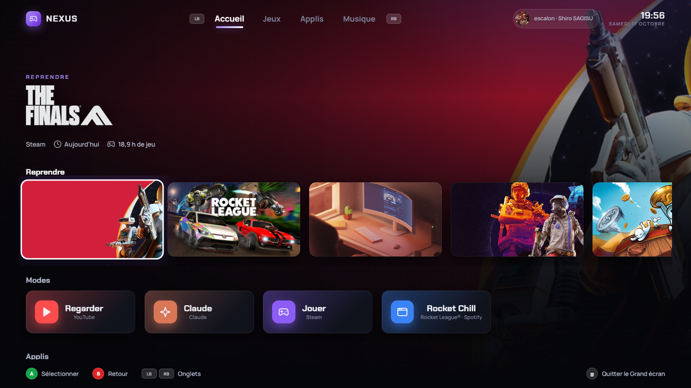
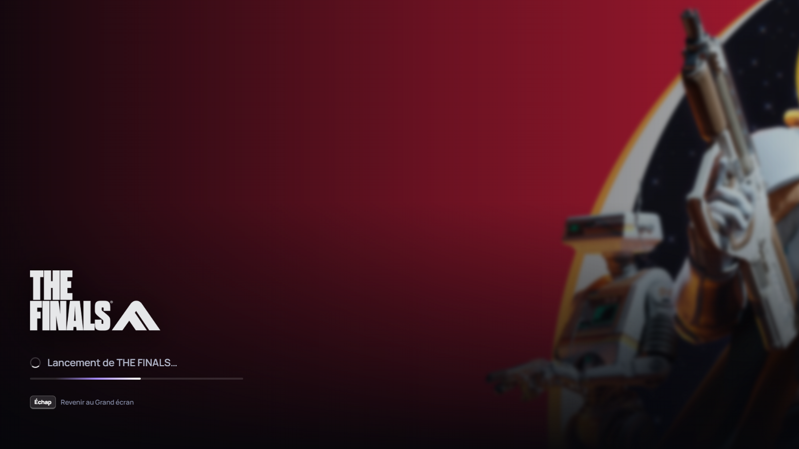
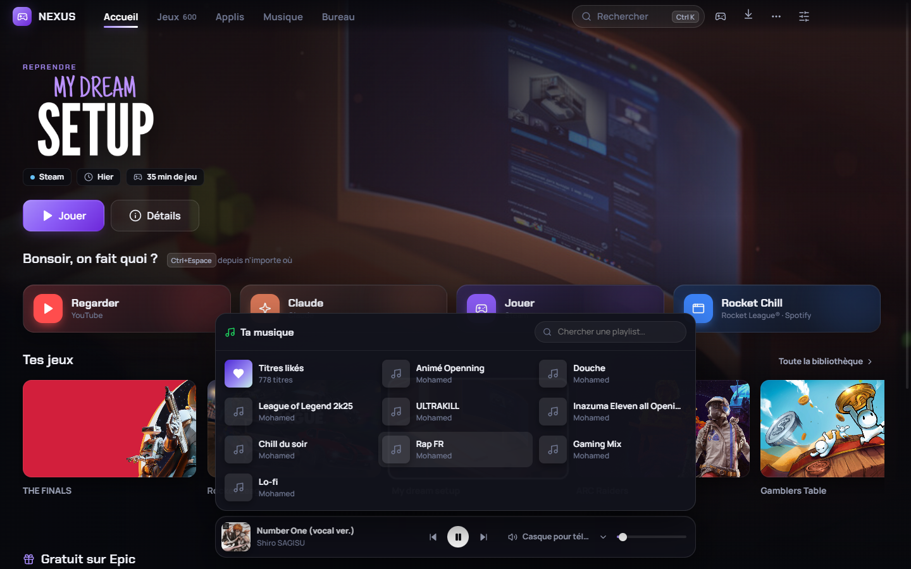
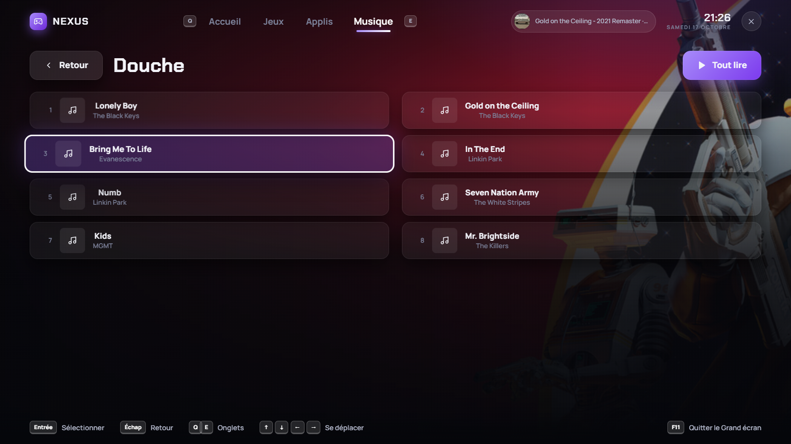
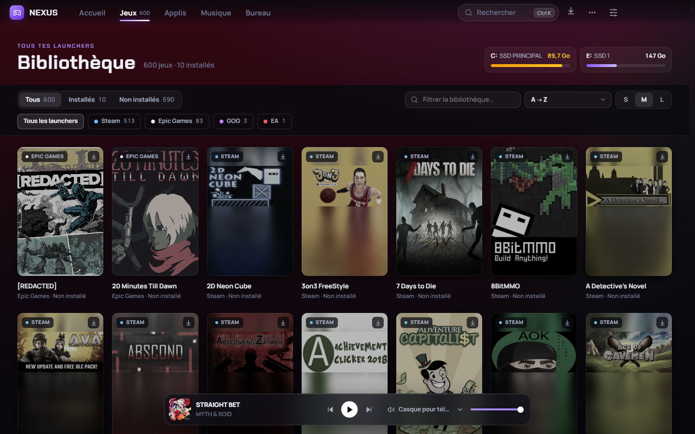

Tous tes jeux, ta musique et ton PC, au même endroit.
Nexus réunit tes jeux de Steam, Epic, GOG et EA, ta musique Spotify et tout ce que tu fais au quotidien sur ton PC. Et quand tu branches une manette, tout passe en Grand écran.

Ton PC, en plus simple
Une seule appli au lieu d'une dizaine de fenêtres. Nexus scanne ton PC tout seul au premier lancement.
Tous tes jeux
Steam, Epic, GOG, EA : toute ta bibliothèque dans une seule liste. Tu lances ou tu installes sans ouvrir les launchers, et tu choisis le disque d'un clic.
Ta musique
Spotify intégré, même en compte gratuit. Tes playlists et tes titres likés au survol du lecteur, et le volume de Spotify séparé du reste.
Grand écran
Un mode console plein écran, pensé pour la manette, comme Steam Big Picture. Il s'ouvre tout seul quand tu branches une manette.
Des modes en un clic
« Regarder », « Jouer », « Coder »… Un mode ouvre d'un coup tout ce qu'il te faut : un site, une appli, ton dernier jeu, ta musique.
Recherche rapide
Un raccourci depuis n'importe où : tu tapes, tu lances. Applis, jeux, sites, notes, éteindre le PC dans une heure…
Dock sur ton 2e écran
Une fine barre de verre façon Mac sur ton deuxième écran : tes modes, tes applis, ta musique, toujours à portée de souris.
Branche une manette, installe-toi dans le canapé
Nexus passe en plein écran avec une animation, et tout se pilote à la manette, au clavier ou à la souris.
- A pour voir un jeu, A pour le lancer
- Un écran de lancement, puis Nexus s'efface pendant que tu joues
- Il revient tout seul quand tu fermes le jeu
- Ta musique et tes playlists, à la manette aussi


Ta musique, sans chercher la fenêtre de Spotify
Passe la souris sur le lecteur : tes playlists et tes titres likés s'ouvrent. Tu entres dans une playlist, tu choisis le titre, ça joue.
- Fonctionne avec un compte Spotify gratuit
- Le volume de Spotify, sans toucher au reste
- Change de sortie audio (casque, enceintes) en un clic


Tous tes launchers, une seule bibliothèque
Tes jeux installés et ceux que tu possèdes, avec leurs jaquettes, filtrés comme tu veux. Tes disques sont affichés en haut, avec la place qui reste.
- Steam, Epic Games, GOG et EA détectés tout seuls
- Installation sur le disque de ton choix, sans ouvrir le launcher
- Suivi des téléchargements en direct

Prêt en une minute
Pas besoin d'être administrateur. Nexus s'installe dans ta session Windows.
Télécharge
Clique sur « Télécharger » et ouvre Nexus-Setup.exe.
Autorise
Si Windows affiche « Windows a protégé votre ordinateur », clique sur Informations complémentaires puis Exécuter quand même.
C'est prêt
Nexus s'ouvre et scanne ton PC. Connecte tes comptes Epic, GOG et Spotify dans les réglages si tu veux.
Ce message de Windows apparaît parce que Nexus est une appli indépendante, sans certificat payant. Elle ne modifie rien sur ton PC en dehors de son propre dossier.